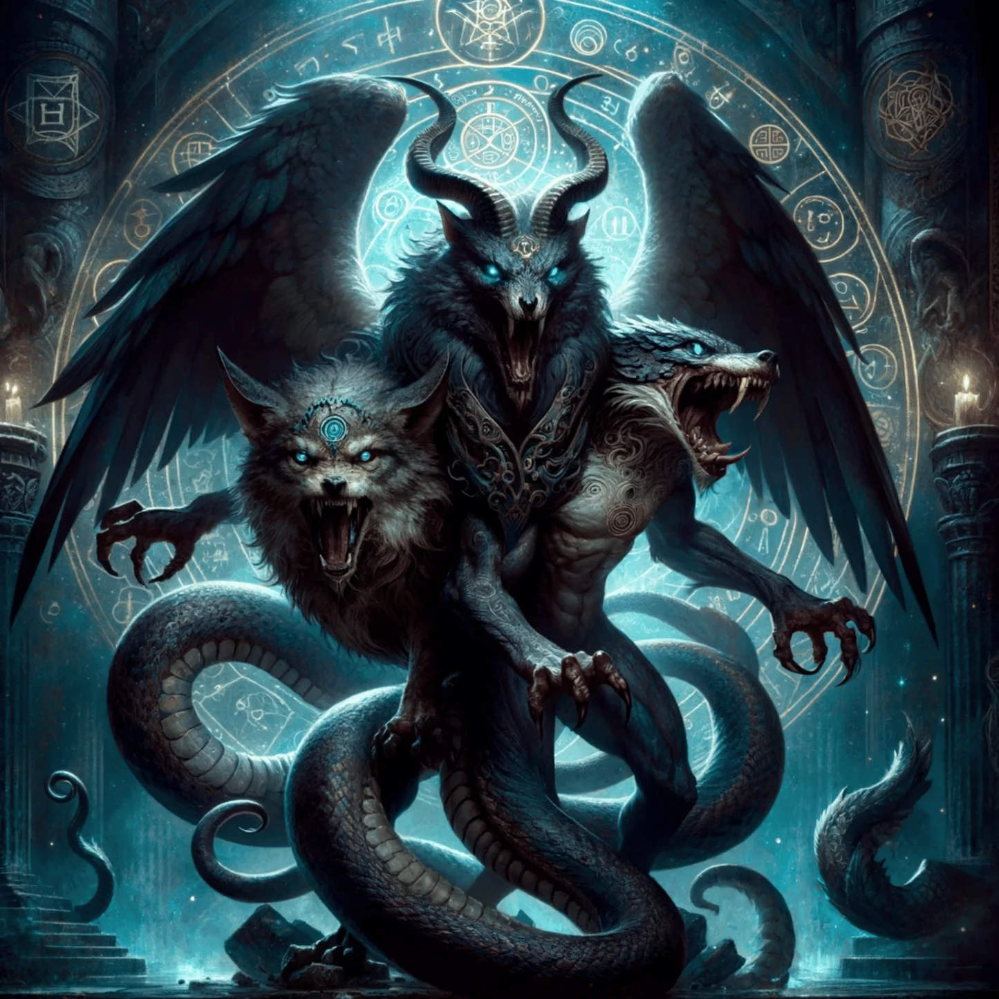
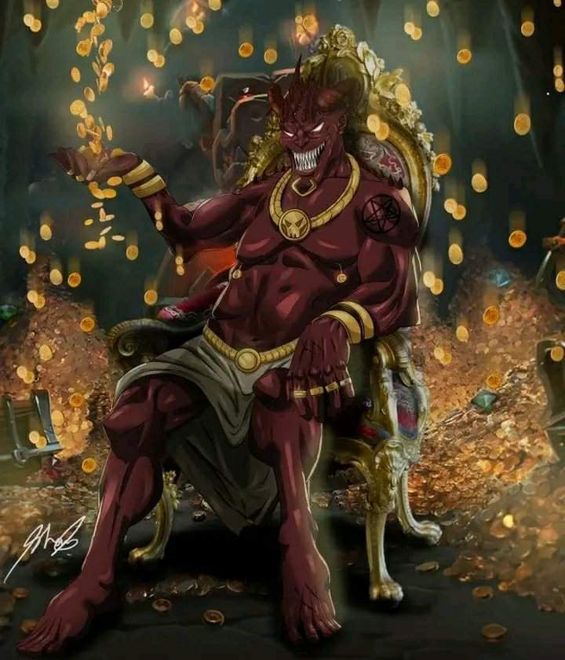
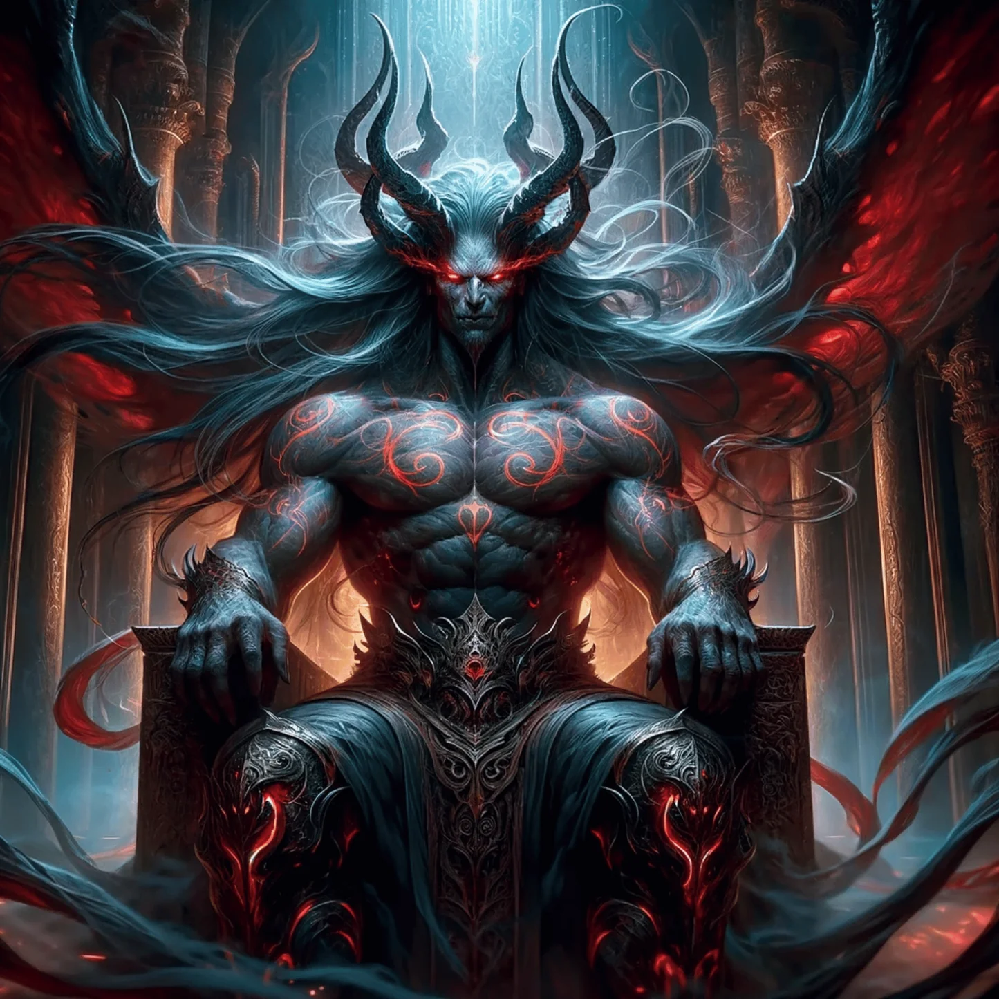
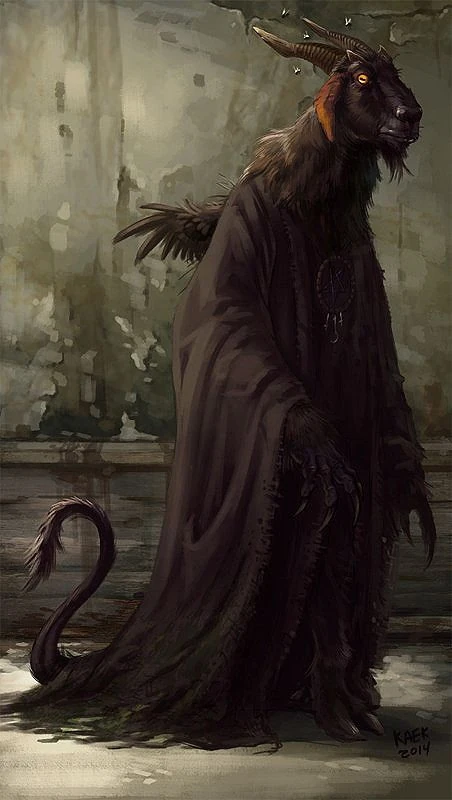
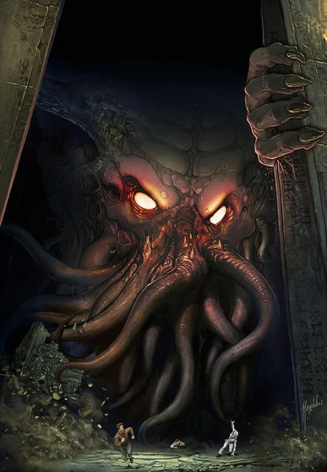
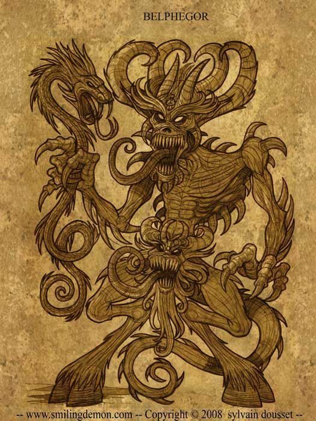

Principes
Amon
Nuestro queridisimo principe Amon, es tan tierno, él es el marqués del infierno que comanda 40 legiones de demonios, él cuenta las cosas del pasado y del futuro, su trabajo es mantener la ira de los seres humanos
Mammón
Mammón, es un principe avaricioso, lo que quiere lo consigue, poe algo él es el demonio de la avaricia, de la codicia y el materialismo, es el demonio ante el cual se arrodillan todos aquellos esclavos del dinero que habitan en el mundo consumista de la actualidad.
Asmodeo
Nuestro cariñoso principe Asmodeo, es el demonio de los pecados carnales, el ser que se encarga de llevar a los hombres a las turbias aguas de la lascivia. Él disfruta incitando la infidelidad y destruyendo noviazgos y matrimonios. Como pocos, Asmodeo es un demonio que aparece en la Biblia como un ser bien diferenciado de Satanás.
Belcebú
El goloso principe Belcebú, el pecado capital de la gula. Su nombre deriva a Ba' al Zebûb, un término despectivo que los hebreos emplearon para burlarse del hecho de que los templos donde era adorado estaban repletos de moscas, insectos que se alimentaban de la carne de los sacrificios que no era recogida y se dejaba pudrir dentro del templo.
Leviatan
El energico, el mejor nadador del infierno, un demonio acuático, que intenta poseer a las personas, siendo muy difícil de exorcizar. Considerado como uno de los “Siete Príncipes del Infierno”, Leviatán es para muchos interpretes una forma simbólica del mismo Satanás. Él es el “Dragón que está en el mar” del que habló el profeta Isaías , la Serpiente Antigua, el terrible “Amo Demonio de los Océanos
Belfegor
El principe Belfegor, el mas generoso, amable y gentil demonio del iframundo, es elq que se encarga de ayudar a la gente a realizar descubrimientos, seduce a las personas a través de inventos ingeniosos que supuestamente les proporcionarán riquezas.